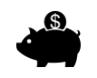

Välkommen till PUFFER GOES WILD videospelautomat – med sitt tema hämtat från den marina miljön, med chans till större Wild-symboler, som kan expandera till 2x2, 3x3 och 4x4 under omspinnen, och många, många fler spännande funktioner.
ACERCA DEL JUEGO
PUFFER GOES WILD är en spelautomat med 5 hjul, där varje hjul visar 4 symboler, och som har 178 olika vinstsätt.
OMSPINNSFUNKTIONEN PUFFER GOES WILD
Bonusspelet med omspinnen aktiveras när Sharky- och Puffer-symbolerna visas på det första respektive det femte hjulet. Puffer flyttar sig ett steg till vänster under omspinnen. Vid vinst utbetalas denna, varpå ännu ett omspinn aktiveras där Puffer flyttar sig ytterligare ett steg åt vänster. När Sharky hamnar på hjul 1 kan Puffer expanderas till en Wild på 2x2 (expandsion bakåt mot femte hjulet). EFTERFÖLJANDE SHARKY-SYMBOLER PÅ HJUL 1 GÖR ATT PUFFER EXPANDERAR TILL 2X2, 3X3 OCH 4X4. PUFFER-WILDS SOM HAMNAR PÅ HJUL 5 UNDER OMSPINNEN BLIR OCKSÅ SIMMANDE WILD-SYMBOLER OCH FÖLJER EFTER DEN UTLÖSANDE SIMMANDE WILD-SYMBOLEN. SHARKY-SYMBOLER PÅ HJUL 1 KAN FÅ VAR OCH EN AV DE SIMMANDE PUFFER-SYMBOLERNA ATT EXPANDERA. Kombinationer om 1x1, 2x2, 3x3 och 4x4 är alltså möjliga.
CÓMO JUGAR
-
Seleccione su apuesta/valor de moneda
-
Haga clic (en versión para escritorio) o pulse (en dispositivos móviles) el botón Girar para comenzar una nueva ronda del juego.
BOTONES DEL JUEGO
|
Icono |
Escritorio |
Móvil |
Åtgärd |
|
|
Acción | Acción | Inicia un giro único |
| Maxinsats | (Situado en la pantalla de selección de apuesta, dentro del menú de configuración) | Establece la apuesta en su nivel máximo. Presione el botón Girar para comenzar el juego. | |
|
|
autospel | Mantenga presionado Girar para comenzar el juego automático (también disponible desde el menú de configuración) | Abre la pantalla del menú en la que que se muestran todas las opciones de juego automático, con las que se pueden jugar múltiples rondas de juego de forma consecutiva. |
|
|
Selección de apuesta | Selección de apuesta (también disponible en el menú de configuración) | Abre las opciones de apuesta para que el jugador seleccione la cantidad que desea apostar. |
| Menú de configuración | Menú de configuración | Abre una nueva pantalla de configuración con las siguientes opciones: Inicio; Audio; Configuración del juego; Historial; Información/Ayuda y Cajero (en caso necesario) | |
|
|
Audio | (La sección de configuración principal está disponible en el menú de configuración) | En escritorio: se abre el menú de configuración de audio para que el jugador pueda activar o desactivar la música o los efectos de sonido. |
|
|
Juego turbo | (disponible desde el menú de configuración del juego) | Aumenta la velocidad de giro de los carriles |
BOTONES DE CONFIGURACIÓN
| Símbolo | Icono | Utilidad |
| Kassa |  | Gör att användaren återförs till insättningssidorna, så att spelaren kan sätta in mer pengar på sitt konto (under förutsättning att funktionen finns tillgänglig i användarsystemet). |
| Tablas de pagos y ayuda |
|
Muestra las tablas de pagos y describe las funciones del juego. |
| Historial de juego |
|
Muestra una lista de las rondas del juego que se han jugado dentro de la sesión de juego en curso. |
| Configuración de apuesta |
|
Desde aquí el jugador puede elegir su apuesta en el juego o elegir entre varias opciones más. |
| Juego automático |
|
Abre la página desde la que se pueden seleccionar e iniciar varias opciones de juego automático (normal y ampliado), incluyendo los límites de pérdidas (cuando sea aplicable) |
| Configuración del juego |
|
Muestra las diferentes opciones de configuración general (p.ej. configuración de audiopara elegir qué sonidos se escuchan durante la sesión de juego) |
| Inicio |
|
Finaliza la sesión de juego en curso (tras una última solicitud de confirmación) y regresa a la página principal del menú de juegos del operador. |
OTRA INFORMACIÓN DEL JUEGO
-
Los premios que coincidan en diferentes líneas de premio se suman y se pagan al jugador.
-
Valor de moneda: muestra el premio teórico correspondiente a la apuesta de la configuración actual. Todos los premios se muestran en monedas, que deben multiplicarse por el valor de la moneda para obtener el valor del premio en dinero.
-
Apuesta: muestra el valor de la apuesta con la configuración actual. El tamaño de la apuesta es igual a 1 moneda multiplicada por el multiplicador de apuesta.
-
Apuesta máx (SOLO para escritorio): establece el valor de moneda más alto posible.
-
Botón Girar: inicia el juego. Cuando los carriles están girando, el botón Girar se transofrma en el botón Detener Turbo. Presione el botón Detener Turbo para detener los carriles inmediatamente.
-
Juego automático: usted puede configurar el juego para jugar sin tener que presionar el botón girar una y otra vez. Elija la cantidad de rondas de juego automático presionando el botón Juego automático (o manteniendo apretado el botón Girar, para abrir el menú de juego automático). Cuando sea aplicable usted podrá elegir condiciones adicionales sobre cuándo detener el juego automático, desde la Configuración del juego. En algunas versiones del software cliente del juego, el límite de pérdidas le impedirá perder una cantidad superior al límite que haya establecido para cada sesión de juego automático. Para detener el juego automático manualmente, presione el botón Detener juego automático.
-
Premio: muestra el premio actual o el último premio que se haya obtenido.
-
Dinero/Moneda: muestra el saldo de la cuenta ya sea en Dinero (valor monetario) o en Monedas (número de créditos) dependiendo de las preferencias del jugador. La opción predeterminada es Dinero.
TEORETISK ÅTERBETALNING
-
Den totala teoretiska återbetalningen till spelaren är 95,513 %.
YTTERLIGARE INFORMATION
-
Alla vinstkombinationer utbetalas från vänster till höger för respektive vinstrad, och utgår från första hjulet. Detta gäller inte för scatter-symbolerna, som visas på 1:a och 5:e hjulet.
-
Funktionsvinster utbetalas utöver de vanliga vinstkombinationerna.
-
I händelse av tekniskt fel i spelets hård- eller mjukvara kommer alla berörda spelinsatser och utbetalningar annulleras och alla berörda insatser återbetalas.
-
Det här är version 1.1 av spelreglerna, daterade 27/03/2018.